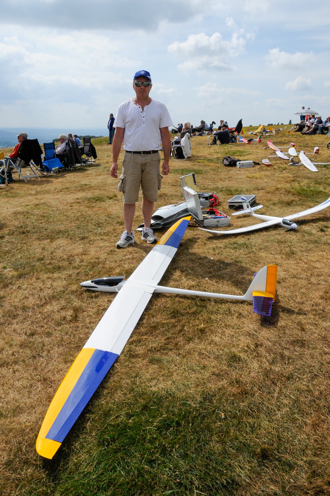

Über mich
Wer hinter Modellflug-Heaven steht

Persönliche Informationen
Mein Name ist Theodor Droste, ich bin Jahrgang 1962 mit Wohnort Bochum und leidenschaftlicher Modellflieger seit 2010.
Ich liebe den Bau von Modell-Flugzeugen, die Stunden am Flugplatz beim LMFC in Waltrop oder das freie Fliegen auf Wiesen und Hängen im Urlaub. Am liebsten fliege ich ruhige Segler, versuche mich leidlich im 3D-Kunstflug und schrotte regelmäßig meine leidgeprüften Hubschrauber, die ich wohl in diesem Leben nicht mehr in den Griff bekommen werde.
Dieses Programm ist aus der Not heraus entstanden. Ich habe schlicht kein für mich passendes Verwaltungsprogramm gefunden und mich dann selbst an die Programmierung gemacht, einem weiteren Hobby, dem ich gerne nachgehe.
Ich hoffe, alle Nutzer haben Spaß an den Möglichkeiten dieses Programms. Bei Fragen bin ich über die Mail-Adresse sicher zu erreichen.
Viel Spaß und Holm- und Rippenbruch!
Ted